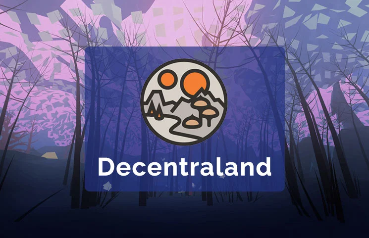

Roblox
Roblox est un jeu vidéo free-to-play et massivement multijoueur en ligne destiné aux
enfants et adolescents, créé par David Baszucki1, sorti en 2004 en version bêta et en version finale en
2005. Il permet de programmer des jeux en Luau, sa propre langue de codage dévié du Lua. En décembre
2012, Roblox comporte 320 millions d'utilisateurs et atteint 10 millions de visiteurs uniques par mois,
en faisant le premier site de divertissement pour enfants selon comScore2.
Roblox est un jeu de type sandbox. L'objectif est de construire un jeu pour qu'il soit visité par les
autres joueurs. Les joueurs sont libres de construire ce qu'ils souhaitent et de partager leur création
avec le reste de la communauté du jeu3. Il y a de nombreux types de jeux populaires : courses
d'obstacles (obbys), tycoons (simulations), simulations de tir, escape games, et plusieurs autres.
Les joueurs, lorsqu'ils visitent un jeu, contrôlent leur personnage. Il est possible de modifier
l'apparence de celui-ci en achetant divers objets comme des chapeaux, des vêtements, ou encore des
visages4. Ces objets peuvent être achetés avec des Robux, la monnaie virtuelle de Roblox.
Pour jouer, il faut créer un compte, le mode invité n'étant plus disponible depuis octobre 2017.
L'intégralité du jeu est modifiable, il est possible de créer ses propres scripts, textures et modèles
pour les insérer dans un jeu.
Meta Horizon Worlds
L'avatar de Mark Zuckerberg posant devant une Tour Eiffel virtuelle, lance officiellement Horizon
Worlds, le Métavers de Meta en France. Depuis mardi 16 août, ce métavers est disponible dans notre pays
mais aussi en Espagne, neuf mois après son lancement aux États-Unis et au Canada. Avec un casque de
réalité virtuelle, les internautes peuvent visiter des mondes numériques. Il est aussi possible de
concevoir son propre espace. En dépit des scandales et des pertes financières, Meta poursuit le
déploiement de son ambitieux projet.
Une version beta, ouverte sur invitation, avait été mise en ligne dès 2020. Selon les chiffres publiés
en février 2022, 300 000 personnes se
connectent tous les mois au monde numérique de Meta.
Comme The Sandbox ou Decentraland, Horizon Worlds est un monde numérique accessible en réalité
virtuelle. Pour y accéder, il faut impérativement se munir d’un casque Oculus Quest 2. À terme, Horizon
Worlds sera également accessible par le biais d’un
navigateur web, sans devoir mettre de casque VR, ou via une application sur smartphone.
Une fois que vous avez investi dans un casque, il suffit d’installer l’application Horizon Worlds par le
biais du site d’Oculus. Meta vous demande ensuite de connecter votre compte Facebook. Bientôt, vous
devrez créer un nouveau compte pour vous immerger dans le métavers de Meta. Du reste, la plate-forme est
entièrement gratuite. Meta ne facture pas l’accès au métavers afin d’attirer le plus de personnes
possible.
Le métavers de Meta est composé de plusieurs univers différents. Au sein de ces mondes, vous pouvez
organiser des conférences avec vos collègues, jouer à une pléthore de jeux, assister à des concerts ou
encore personnaliser votre avatar en achetant des vêtements virtuels. C’est grâce aux ventes d’objets
numériques que l’entreprise compte générer des profits. Dans cette optique, les tokens non fongibles
(NFT) seront intégrés aux univers.
Parmi les sections les plus populaires, on trouve Arena Clash, un jeu de tir en coopération, Wake The
Robot, un puzzle interactif ou encore la discothèque en VR, appelée Club Vivid. Récemment, Meta a
inauguré un monde “horreur” pour les internautes les plus courageux, celui des « arthropodes, ces
araignées et insectes rampants et effrayants ».
Horizon Worlds est par ailleurs un espace de création ouvert à tous. Par le biais de l’outil Horizon
Worlds Builder, les utilisateurs peuvent en effet concevoir des arènes de jeu ou organiser des
activités. Il n’est pas nécessaire d’avoir des connaissances en programmation informatique pour y
arriver. Comme le soulignait Meta l’an dernier, « vous n’êtes pas qu’un simple visiteur, vous faites
partie de ce qui rend ce monde formidable ». Plus de 10 000 mondes ont déjà été créés par la communauté.

Decentraland
Decentraland est une plate-forme de réalité virtuelle 3D décentralisée qui se compose de
90 601 parcelles de terrain (environ 23 km2). Les parcelles de Decentraland sont des jetons non
fongibles qui peuvent être achetés en utilisant la crypto-monnaie MANA. Cette crypto-monnaie repose sur
la blockchain Ethereum. Decentraland a été ouvert au public en février 2020 et est supervisé par la
fondation à but non lucratif Decentraland.
Decentraland a été créé en 2015 par les argentins Ari Meilich et Esteban Ordano. Il ne s'agissait au
départ que d'une grille pixélisée qui attribuait des pixels aux utilisateurs via un algorithme de preuve
de travail. Decentraland a ensuite évolué vers un monde en 3D. Aujourd'hui, la plateforme est considérée
comme un précurseur du métavers5. En octobre 2018, Decentraland et Animoca Brands ont réalisé un
investissement mutuel via un échange d'actions et de jetons MANA équivalant à 0,5 million de dollars
chacun. Les investisseurs de Decentraland incluent Digital Currency Group, Kenetic Capital, FBG
Capital, CoinFund et Hashed.
Lors du lancement de la version beta de Decentraland en 2017, les parcelles valaient 20 $. En 2021, une
parcelle a été vendue plus de 2 millions de dollars.
Decentraland est avant tout une sorte de jeu en ligne que l’on pourrait comparer à Second Life et à
Minecraft (pour son aspect créatif et construction). Ce jeu n’invente donc rien en termes de gameplay ou
de concept. Vous créez votre avatar, vous achetez une parcelle de terrain virtuel et vous pouvez y créer
ce que vous voulez à partir des ressources communautaires. Son intérêt se situe ailleurs.
Sur un jeu vidéo classique, l’administration et le développement du jeu est logiquement assuré par
l’équipe qui a développé le jeu. C’est elle qui a le contrôle des serveurs, qui peut décider de bannir
un joueur ou d’ajouter une fonctionnalité.
Sur Decentraland, tout est décentralisé : le contrôle du jeu est laissé à la communauté. C’est la
communauté qui s’autorégule, qui crée le contenu (et peut le vendre aux autres joueurs) et le jeu ne
dépend pas d’un seul et unique serveur centralisé. C’est donc une petite révolution : un jeu vidéo qui
appartient aux joueurs. Ce modèle de gouvernance est ce que l’on appelle un “DAO”, Decentralized
Autonomous Organization, une organisation autonome décentralisée.
Dans un DAO, personne ne prend le contrôle : tout est organisé en amont par du code informatique afin
que les usagers puissent participer à la gouvernance du projet. Si le code est mal fait, le projet peut
avoir de sérieux problèmes, ce qui est déjà arrivé avec les premiers projets de DAO tels que “TheDAO”
qui a été piraté en 2016 en raison d’une faille dans son code.
Pour que tout ce petit monde fonctionne, il a fallu lui attribuer sa propre crypto-monnaie : le MANA.
Avec du MANA, on achète une parcelle de terrain virtuelle, des objets pour créer son monde, ainsi que
des accessoires cosmétiques pour personnaliser son avatar. Cela peut paraître trivial mais un tel projet
n’a jamais été vu auparavant. Il s’agit pour sûr de l’un des pionniers du futur du jeu vidéo et même
d’internet. Et en sa qualité de pionnier, Decentraland est une référence présente et future
indiscutable.
The Sandbox
The Sandbox est un metaverse communautaire où les joueurs peuvent concevoir, partager et
vivre des expériences virtuelles. Basé sur la blockchain Ethereum, le monde virtuel de The Sandbox tente
de changer la dynamique du marché des jeux vidéo avec le principe du « Play-to-Earn » et des tokens non
fongibles (NFTs).
The Sandbox (SAND) est un jeu initialement conçu pour les smartphones en 2011 par la société Pixowl,
fondée par deux Français : Arthur Madrid (directeur général) et Sébastien Borget (directeur des
opérations).
Le jeu devient un véritable succès. Initialement destiné à rivaliser avec Minecraft, le jeu mobile The
Sandbox a généré plus de 40 millions de téléchargements dans le monde entier. Durant les sept années qui
ont suivi sa création, ce sont plus de 70 millions de mondes qui ont été créés dans The Sandbox et sa
suite, The Sandbox Évolution, sortie le 23 juin 2016.
En 2018, The Sandbox a été acquis par Animoca Brands, une société de développement de jeux vidéo basée à
Hong Kong. C'est d'ailleurs Animoca Brands qui a développé la plateforme The Sandbox avec des graphismes
de style Voxel similaires à d'autres jeux populaires tels que Roblox ou Minecraft. Le protocole de The
Sandbox étant basé sur la blockchain, ses utilisateurs peuvent y créer tout un univers et son économie,
portant le jeu à un niveau encore jamais exploré.
The Sandbox est un jeu de type « Play-to-Earn » (jouer pour gagner), mais c’est aussi bien plus que ça.
C’est avant tout un monde virtuel, l'un des metaverse les plus développés à ce jour, dans lequel les
joueurs peuvent posséder, construire et monétiser des actifs virtuels et des expériences de jeu par
l’intermédiaire de tokens non fongibles (NFT). Le projet s'est associé à de nombreux influenceurs,
marques et artistes, parmi lesquels Snoop Dogg, Atari, Ubisoft, Warner Music Group, Binance ou encore
Deadmau5.
The Sandbox s’est développé autour d’une économie complète, afin de satisfaire à la fois les joueurs,
les investisseurs, les artistes et les concepteurs de jeux vidéo. Pour faire fonctionner cette économie,
en plus de sa propre cryptomonnaie SAND. The Sandbox s’articule autour de trois piliers principaux : une
place de marché, un logiciel de modélisation et un logiciel de conception de jeux.
Axie Infinity
Axie Infinity est un jeu vidéo en ligne créé en 2018, reposant sur les NFT, et développé
par le studio vietnamien Sky Mavis. Son économie en jeu utilise des crypto-monnaies reposant sur la
plateforme Ethereum ; Ce jeu est devenu une forme de travail pour des personnes vivant dans des pays en
développement, notamment aux Philippines (35 % environ du trafic, et la majorité des 2,5 millions de
joueurs actifs en 2022).
Axie Infinity (AXS) est un jeu de combat de créatures en ligne dans lequel s’affrontent des animaux
dessins animés. Classé dans la catégorie des jetons non fongibles (NFT), chaque Axie a ses propres
caractéristiques et forces. Inspiré des jeux tels que Pokémon et Tamagotchi, Axie Infinity accorde à ces
clients qui sont des joueurs la possibilité de vendre et d’échanger en toute transparence leurs gains de
jeu contre de la monnaie numérique.
Ce jeu contient de la stratégie et du fun, les joueurs peuvent défier des concurrents du monde entier,
avec leur équipe d’Axies.
Le jeu est facile à prendre en main, jouable sur n’importe quel téléphone Android, IOS ou encore sur PC.
Axie infinity est considéré comme le meilleur jeu “Play to earn” créé actuellement sur le Web3.
La popularité d’Axie Infinity a gagné le monde de la crypto et plus particulièrement les réseaux sociaux
tels que Twitter ou encore Discord. Le jeu est devenu populaire et attire de plus en plus de joueurs.
De nombreuses Guildes se créent et l’économie de l’écosystème augmente à
grand pas.
Le fait que de nombreux joueurs découvrent et investissent dans le jeu augmente la valeur des actifs du
jeu et donc des récompenses. Avec près de 3 millions de joueurs quotidiennement, le jeu devient très
rentable pour les joueurs, ce qui attire encore plus de monde. Pour commencer le jeu durant le pic de
joueurs, il fallait débourser environ 1000$, pour acheter 3 Axies, il suffit seulement de 30$
actuellement.